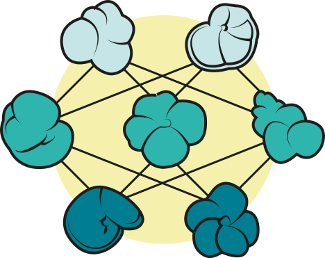

I am a computational evolutionary paleobiologist who is primarily interested in developing novel methodologies and tools in order to answer questions about macroevolutionary dynamics in deep time.
Currently, I am an early career researcher at Stockholm University in the Department of Geological Sciences (IGV), working on applying deep learning and computer vision to understanding the morphological evolution of planktonic foraminifer communities across the K-Pg boundary. This project is supported by a starting grant within natural and engineering sciences awarded by the Swedish Research Council.

My research uses machine learning, high-throughput imaging, and statistical modelling to understand morphological evolution and macroevolutionary patterns and processes. I am particularly interested in bringing a ‘next-generation’ approach (e.g., automated Big data collection) to studying morphological evolution in deep time.
I work with both vertebrate and invertebrate systems. Taxonomic groups I have worked with include turtles, squamate lizards, birds, mammals, and planktonic foraminifera.
By bridging the fields of computer science and evolutionary biology, I aim to deliver a unique and creative perspective towards understanding evolution and the history of life on earth.